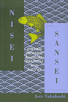

<body bgcolor="#FFFFFF" text="#000000" link="#0000FF" vlink="#CC0000" alink="#CC0000"><center><hr width="350" size="1" align="center" noshade>A fresh look at the many and diverse political strategies that forged a Japanese American identity<hr width="350" size="1" align="center" noshade><p><a href="https://cdcshoppingcart.uchicago.edu/Cart/ChicagoBook.aspx?ISBN=9781566395502&&PRESS=temple" target="_top">Buy this book!</a> | <a href="https://cdcshoppingcart.uchicago.edu/Cart/Cart.aspx?PRESS=temple" target="_top">View Cart</a> | <a href="https://cdcshoppingcart.uchicago.edu/Cart/Cart.aspx?PRESS=temple" target="_top">Check Out</a></p><p></p></center><!--none//--><h1>Nisei/Sansei</h1>
<H2>Shifting Japanese American Identities and Politics</H2>
<h3>Jere Takahashi</h3>
<P>cloth 1-56639-550-X $52.50, Oct 97, <FONT COLOR=#990033>Out of Stock Unavailable</FONT>
<br>paper 1-56639-659-X $30.95, <FONT COLOR=#990033>Available</FONT>
<BR> 280 pp
6x9
1&nbsp;table
</P><h3 align="center"><P><font color="#996633">Honorable Mention for Outstanding Books Awards, Gustavus Myers Center for the Study of Bigotry and Human Rights in North America,
1997</font></P>
</H3>
<BLOCKQUOTE><I>"On the ever fluid and elusive topic of political identity, </I>Nisei/Sansei<I> is one of the most important books to appear on this subject in the last decade. With a careful and yet engagingly written socio-historical analysis, Takahashi develops a compelling case for how the shifting economic and social context shapes the political options and strategies. In that sense, this is a book primarily about political theory and political mobilization-but with a substantive focus on the specific history of Japanese-Americans."</I>
<br>&#151<b>Troy Duster</b>, Director of the Institute for the Study of Social Change, University of California, Berkeley<I></I></BLOCKQUOTE>
<p>To talk about "political style" is to acknowledge a dynamic and somewhat improvisational approach to politics; it is to acknowledge the need to work within the limits presented by tradition, resources, and social context. To speak of "political style" in relation to a particular ethnic group is to recognize their agency in shaping their history.
<p>In <I>Nisei/Sansei: Shifting Japanese American Identities and Politics</I>, Jere Takahashi challenges studies that describe the Japanese American community's essentially linear process toward assimilation into U.S. society. As he develops a complex and nuanced account of Japanese American life, he shows that a diversity of opinion and debate about effective political strategy characterized each generation of Japanese Americans. As he investigates the ways in which each generation attempted to advance its interests and concerns, he uncovers the struggles over key issues and introduces the community activists whose voices have been muffled by assimilation narratives.
<p>Takahashi's approach to political style includes the ways that Japanese Americans mustered and managed political resources, but also encompasses their on-going efforts at self-definition. His focus, then, is on personal and social action; on individual activists, power, and ideological shifts within the community, and generational change. In telling the story of the community's complex and dynamic relationship to the larger society, he highlights individuals who contributed to the struggles and debates that paved the way for the emergence of a distinct Japanese American identity.
<BR>&nbsp;<h2>Excerpt</h2><P>Excerpt available at <a href="http://www.temple.edu/tempress">www.temple.edu/tempress</a></p>
<BR>&nbsp;<h2>Reviews</h2>
<p><I>"Jere Takahashi's ambitious exposition of Japanese-American politics from the 1920s into the 1970s is a major contribution to Asian-American studies. His attention to nuance and detail not only illuminates their political lifestyles but also gives us another vantage point from which to view post-World War II America."</I>
<br>&#151<b>Roger Daniels</b>, Charles Phelps Taft Professor, History, University of Cincinnati
<p><I>"</I>Nisei/Sansei<I> is a timely study; it takes us beyond the rhetorical denunciation of 'identity politics' by giving us scholarly insights into the relationship between identity and politics for Japanese Americans."</I>
<br>&#151<b>Ronald Takaki</b>, author of <I>Strangers from a Different Shore: A History of Asian Americans</I>
<p><I>"</I>Nisei/Sansei<I> makes an important original contribution to Japanese-American Studies. Past studies of the Nisei generation have been premised on the assumption of generational homogeneity. In contrast, Takahashi's study is premised on the existence of crucial subsets within the Nisei generation and presents those subsets in terms of different Nisei responses to racial subordination within a larger economic context. This is at once the strength and originality of Takahashi's work which explains the triumph of the accommodationist response among the Nisei during and after World War II and the emergence of Sansei militance in the late 1960's.... Not only will this book be of interest to Japanese-Americans and other Asian Americans, but to anyone interested in the sixties and wartime internment of Japanese Americans."</I>
<br>&#151<b>Yuji Ichioka</b>, Professor of Asian American Studies, University of California, Los Angeles
<p><i>"It is fun to read a book in which new ideas and methods are used in fruitful and challenging ways. ... the core of the book&#151a thoughtful complication of the traditional generational assimilation model&#151is sound and opens important new directions for social and political analysis."</i>
<br>&#151<b><a href="http://www.h-net.org/reviews/showrev.cgi?path=28070961002477" target="new">H-Net</a></b>
<p><i>"Jere Takahashi's insightful study creates a detailed and complex portrayal of the Nisei and Sansei (second- and third-generation Japanese Americans, respectively) and contributes to a more highly nuanced understanding of the construction of ethnic identities, the relationship between race and politics in the United States."</i>
<br>&#151<b><i><a href="../reviews/820_review.html">Contemporary Sociology</a></i></b>
<BR>&nbsp;<h2>Contents</h2><P>
<p>Preface
<br>Introduction
<br>1. The Issei Legacy: From Entry to Exclusion
<br>2. Grant Avenue Blues: Pre-World War II Nisei Socioeconomic Position
<br>3. "Lower the Anchor": Formation of Nisei Perspectives
<br>4. "Constructive Cooperation": Submesion of Ethnicity and Rising Significance of Americanization
<br>5. "Making Do": Reentry to American Life
<br>6. More Than "Conservative": Postwar Political Styles
<br>7. "Divided by Color": Changing Racial Context
<br>8. "From Our Own Point of View": Coming to Terms With the 1960s
<br>Conclusion
<br>Notes
<br>Index
</P><BR>&nbsp;<H2>About the Author(s)</H2>
<P><B>Jere Takahashi</B> teaches Asian American Studies at the University of California, Berkeley.</P>
<BR><H2>Subject Categories</H2>
<p><A HREF="/tempress/sociology.html" TARGET="_top">Sociology</a>
<BR><A HREF="/tempress/asian_amer.html" TARGET="_top">Asian American Studies</a>
</p>
<BR><h2 class="inpageheading">In the series</H2>
<P><I><a href="http://www.temple.edu/tempress/asam_history.html" onMouseOver="window.status='Click for other books in this series!'; return true;" onMouseOut="window.status=''; return true;" target="_top">Asian American History and Culture</a></i>, edited by K. Scott Wong, Linda Trinh Võ, and Cathy Schlund-Vials.
</p><p>Founded by Sucheng Chan in 1991, the <I>Asian American History and Culture</I>, series has sponsored innovative scholarship that has redefined, expanded, and advanced the field of Asian American studies while strengthening its links to related areas of scholarly inquiry and engaged critique. Like the field from which it emerged, the series remains rooted in the social sciences and humanities, encompassing multiple regions, formations, communities, and identities. Extending the vision of founding editor Sucheng Chan and emeriti editor Michael Omi and David Palumbo-Liu, series editors K. Scott Wong, Linda Trinh Võ, and Cathy Schlund-Vials continue to develop a foundational collection that embodies a range of theoretical and methodological approaches to Asian American studies.</p>
<p align="center"><a href="https://cdcshoppingcart.uchicago.edu/Cart/ChicagoBook.aspx?ISBN=9781566395502&&PRESS=temple" target="_top">Buy this book!</a> | <a href="https://cdcshoppingcart.uchicago.edu/Cart/Cart.aspx?PRESS=temple" target="_top">View Cart</a> | <a href="https://cdcshoppingcart.uchicago.edu/Cart/Cart.aspx?PRESS=temple" target="_top">Check Out</a></p><p><font face="Arial" size="1"><a href="copyright.html" onMouseOver="window.status='Web Copyright Policy';return true;" onMouseOut="window.status=''" title="Web Copyright Policy">&copy;</a> 2015 <a href="http://www.temple.edu" target="new" onMouseOver="window.status='Link to Temple University home page';return true;" onMouseOut="window.status=''" title="Link to Temple University home page">Temple University</a>. All Rights Reserved. http://www.temple.edu/tempress/titles/820_reg.html</font></p>